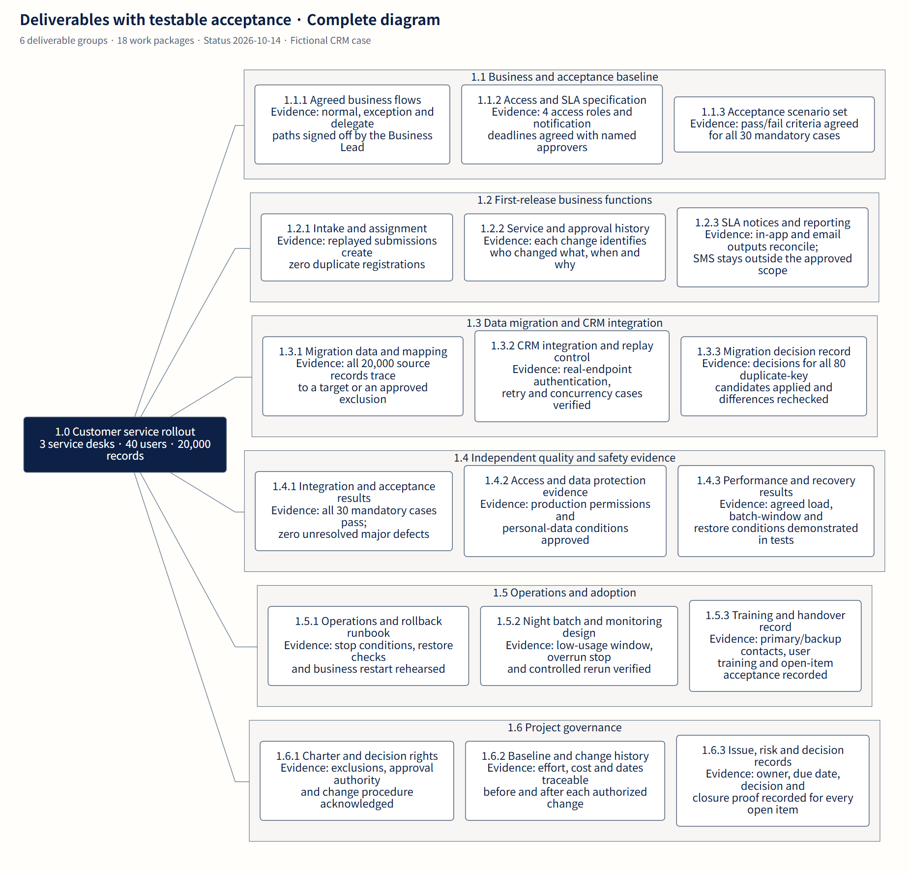
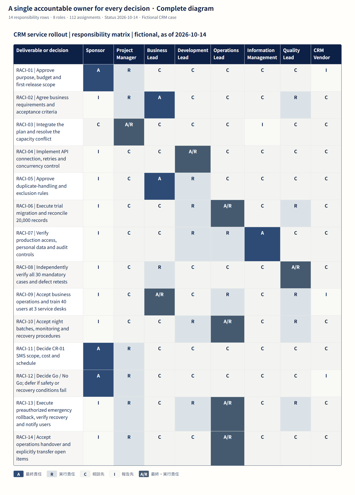
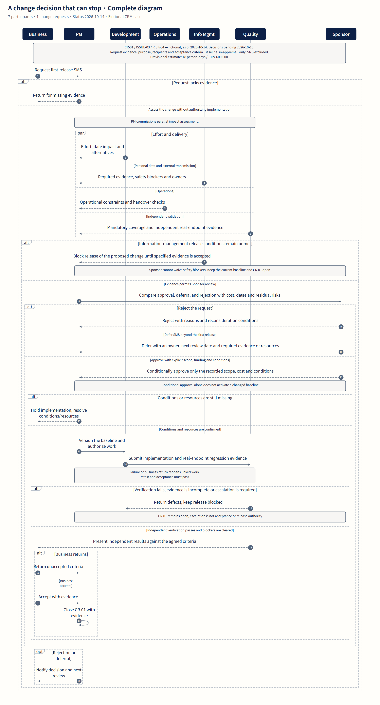
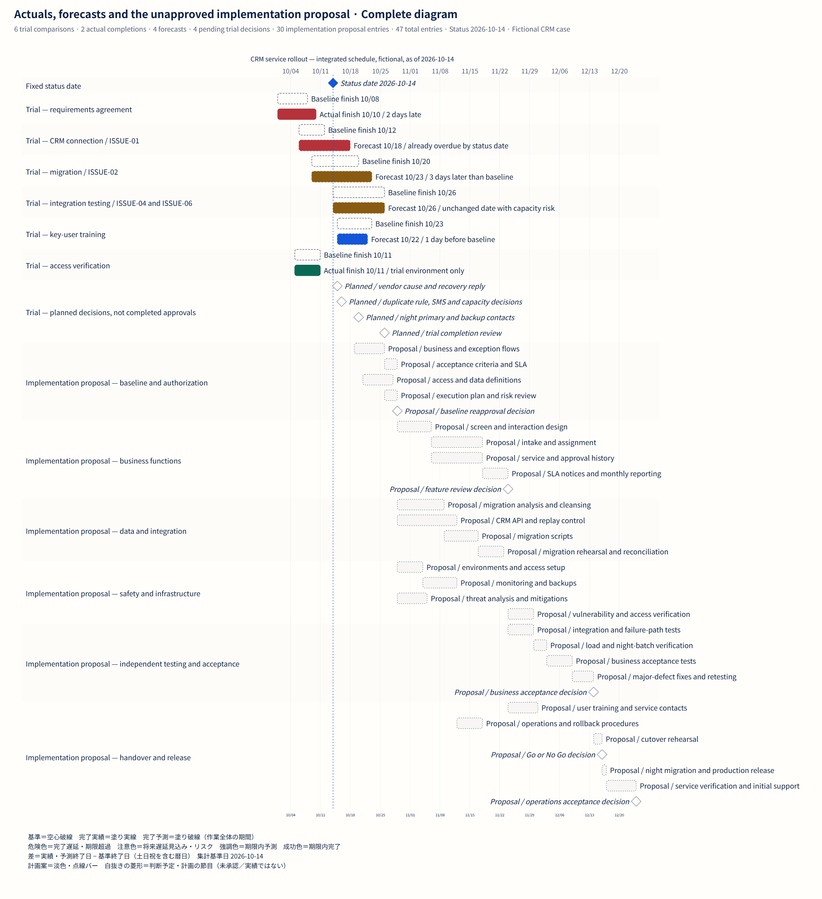

WBS
Six deliverable groups and 18 work packages keep business capability, data, safety, operations and governance in the same scope.



RACI
The unchanged 14-by-8 responsibility matrix separates Sponsor scope authority, Business acceptance, independent Quality and preauthorized Operations rollback.



Change-control flow
CR-01 compares +8 person-days / +JPY 600,000 with rejection and deferral, preserves Information Management blocking authority, and requires baseline revision and independent revalidation.



Schedule
The integrated calendar keeps six baseline/current pairs, four pending trial decisions and all 30 implementation proposal entries on one timeline.
